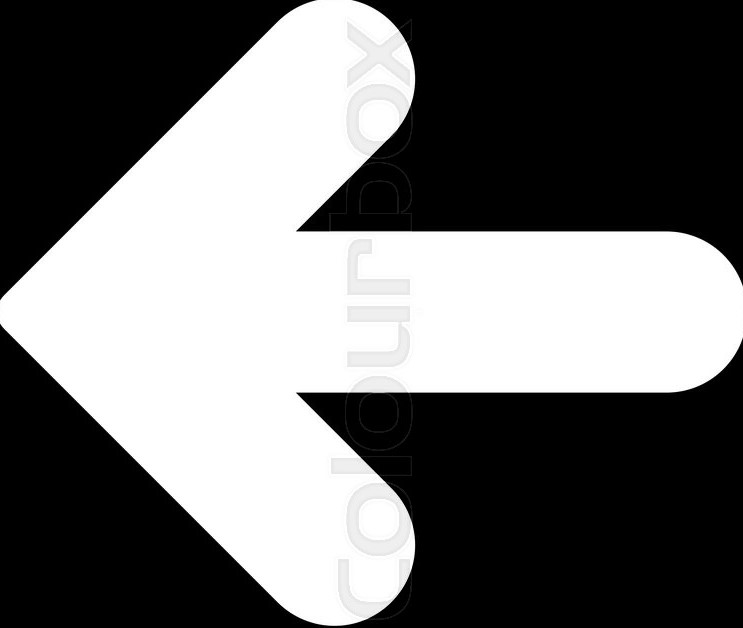
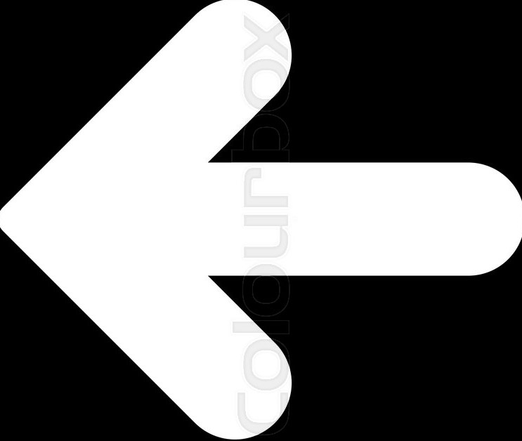

Low speed excitement Ducati enters the Cruiser world and does so in its very own way,
representing the best of both worlds. The Ducati world: thrilling performance,
sporty power, advanced electronics. The cruiser world: long, low, forward positioned footpegs,
powerful torque even at low speeds, no compromise in terms of materals and finishes.
The XDiavel is now available in the new color Matt Liquid Concrete Grey.

Muscular lines and an imposing front bring out the strong and restless personality of the new Diavel,
featuring a long, slender rear with a 240mm rear wheel.
The wide air inlets and trellis frame complete the elegant picture as they support the engine,
the true beating heart of this bike. The S version, featuring the total black livery and Öhlins suspension,
is the embodiment of the new Diavel’s determined and sophisticated style.

Full LED lighting system with DRL.
The XDiavel S features a dominant front headlight with Daytime Running Light (in countries where it is allowed).
The DRL is a particular light which guarantees perfect visibility of the bike during the day and, at the same time,
thanks to its particular form, makes the XDiavel S instantly recognisable also in sunlight.
 

- WHEELBASE :
- 1615 mm (63,58 in)
- DISPLACEMENT
- 1262 cc
- POWER
- 152 hp (112 kW) @ 9500 rpm
- TORQUE
- 93 lb-ft (126 Nm) @ 5,000 rpm
- DRY WEIGHT
- 220 kg (485 lb)
- SEAT HEIGHT
- 755 mm (29,72 in)
- SAFETY EQUIPMENT
- Ducati Safety Pack (Cornering ABS Bosch,
Ducati Traction control DTC), Riding Mode,
Power Mode - MAINTEINANCE SERVICE
INTERVALS - 9,000m/12 Months